팀 프로젝트 확장 작업 설명 — 2·3·4단계에서 무엇을, 어떤 기술로, 왜 했는지
원래 주제는 "도로 대비 차량 면적 비로 혼잡도 측정"이에요. 이번 작업에서는 여기에 네 가지를 더했어요.
1단계(차량 세그멘테이션 모델 학습)는 이번 작업에서 제외했어요. 차량은 COCO 사전학습 모델로 찾았고, 팀 모델이 완성되면 파일 하나만 바꾸면 돼요.
지체 시간은 실제 속도 데이터가 없어 검증하지 못한 추정값이에요. 자세한 한계는 각 단계 끝과 마지막 장에 정리했어요.
작업 중에 데이터에서 설계를 바꿔야 하는 특징 네 가지를 발견했어요. 뒤에 나오는 기술 선택은 대부분 이 특징들 때문이에요.
| 특징 | 어떻게 알았나 | 설계에 준 영향 |
|---|---|---|
| 동영상이 아니라 약 3초 간격 사진 | 번호가 이어진 사진(000→001→002)에서 차량이 전부 바뀜. 인제 터널 화면에 찍힌 시각(300번 사진 = 클립 시작 +15분 22초)으로 계산 | 차량 추적·통과 대수·장기 예측 불가 → 사진 한 장으로 계산되는 점유율을 씀. 클립 길이는 중앙값 약 6분 |
| 클립 도중 카메라가 회전 | 수원 화면의 PRESET 001 ↔ 002, 부안 화면이 180° 돌아감 | 다른 화면의 배경·차량 위치가 섞이면 차선이 망가짐 → 화면별로 나눠 처리 (49개 클립 → 장면 287개) |
| 도로·차선·방향 라벨 없음 | AI-Hub 라벨은 차량 폴리곤뿐이고, 이 컴퓨터에는 그마저 없음 | 사전학습 모델 + 기하 계산 + 자동 라벨로 해결 |
| 파일 이름에 차로 수 | TW2 = 양방향 2차로, OW5 = 한방향 5차로 | 차로 분리 결과의 채점 기준으로 사용. 단 OW인데 반대편 도로가 보이는 화면도 있어 완전한 정답은 아님 |
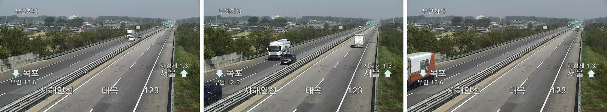
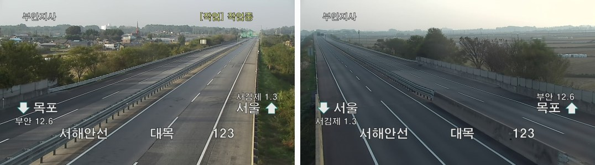
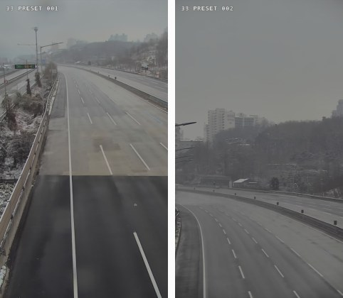
| 한 일 | 모든 사진에서 차량(승용차·오토바이·버스·트럭) 영역을 픽셀 단위로 찾음 → 차량 212,711대 |
|---|---|
| 기술 | YOLO26m-seg (Ultralytics, COCO 데이터셋 사전학습 인스턴스 세그멘테이션 CNN). 입력 1280px, 확신도 0.25 이상 |
| 왜 | 1단계 팀 모델 대신 바로 쓸 수 있고 먼 차까지 잘 잡음(장당 약 0.2초). 팀 모델이 생기면 s1_vehicles.py --weights로 교체 |
| 한 일 | 한 화면의 사진 최대 60장에서 차량 픽셀을 지우고, 픽셀마다 중앙값을 구해 차가 한 대도 없는 도로 사진을 만듦 |
|---|---|
| 기술 | 차량 마스크를 조금 넓혀 빈칸(NaN) 처리 → numpy.nanmedian |
| 왜 | 도로·차선 모델이 차에 가려진 부분 없이 도로 전체를 보게 하려고. 차가 많은 수원 화면에서도 깨끗하게 나옴 |
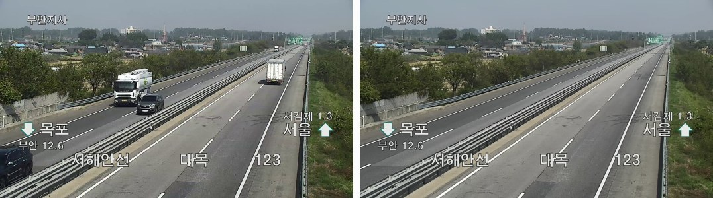
| 한 일 | 차량 마스크의 가장 아래쪽 가운데 점 = 바퀴가 도로에 닿는 위치 |
|---|---|
| 왜 | 차량 마스크 전체는 차 높이 때문에 옆 차로까지 덮지만, 바닥점은 실제로 달린 차로를 가리킴 → 차로 이용률(갓길 판정)과 차로 배정에 사용 |
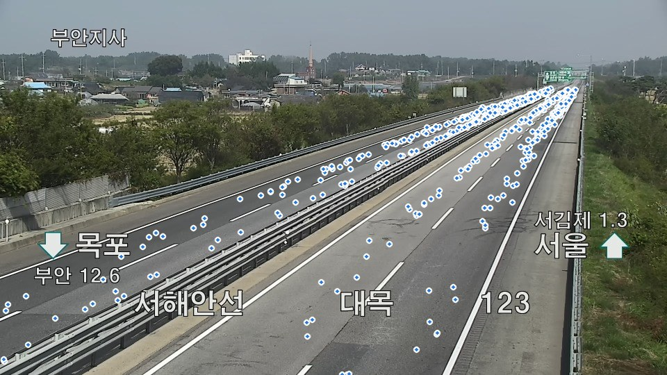
| 한 일 | 한 클립 안에서 카메라가 돌아간 경우를 찾아 화면별로 나누고, 화면마다 배경 사진을 다시 만듦 |
|---|---|
| 기술 | ① 사진 위쪽(하늘·건물·육교 — 차가 거의 없음)을 작게 줄인 흑백 특징 → KMeans(k=2, 3) 군집 → 실루엣 점수 0.3 이상일 때만 나눔 ② 나눈 화면의 배경끼리 윤곽선(Sobel) 상관계수 0.7 이상이면 같은 구도로 보고 다시 합침 |
| 왜 | ①만 쓰면 가로등 켜짐, 노출 변화, 흑백 전환도 "다른 화면"으로 잘못 나뉨. 윤곽선은 밝기에 영향을 덜 받음. 확인해 보니 같은 구도는 0.84 이상, 실제로 다른 화면은 0.48 이하로 깔끔하게 갈림 |
사람이 그린 라벨 없이, 사전학습 분할 모델로 도로와 차선 도색을 찾고 기하 계산으로 방향별 도로와 차로를 나눈 뒤, 자동 라벨로 학습한 CNN으로 방향을 정했어요.
| 한 일 | 배경 사진의 모든 픽셀을 도로 / 차선 도색 / 중앙분리대·가드레일 / 기타로 분류 |
|---|---|
| 기술 | Mask2Former (Swin-Large 백본) — Mapillary Vistas(전 세계 거리 사진 2만5천 장, 65개 클래스)로 사전학습된 모델 (facebook/mask2former-swin-large-mapillary-vistas-semantic, HuggingFace) |
| 원리 | Transformer 기반 분할 모델. 이미지 특징 위에 "마스크 후보" 여러 개를 쿼리로 두고, 각 후보가 자기 영역에만 집중하는 masked attention으로 다듬어 마스크와 클래스를 함께 예측 |
| 왜 | 도로(Road), 차선 도색(Lane Marking), 분리대(Guard Rail·Barrier)가 모두 클래스로 있어 라벨 없이 한 번에 찾을 수 있음. 차량 눈높이 사진으로 학습됐지만 높은 CCTV 화면에도 잘 통함 |
| 조정 | 기본 입력(384×384)으로 줄이면 가는 점선이 끊김 → 1920×1080 원본 해상도로 입력(장당 약 5초) |
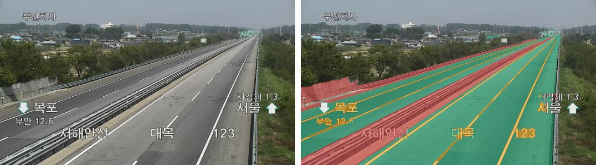
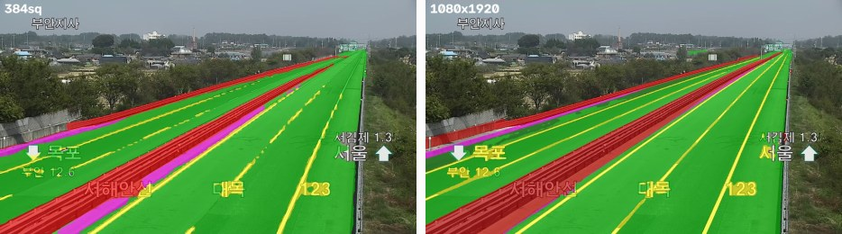
| 한 일 | 평행한 차선들이 멀리서 한 점으로 모이는 소실점의 위치를 찾음 |
|---|---|
| 기술 | 차선 도색·분리대 윤곽에서 Hough 변환(OpenCV HoughLinesP)으로 직선 조각 추출 → RANSAC: 직선 두 개를 무작위로 골라 교점을 만들고, 그 점을 향하는 직선 길이의 합이 가장 큰 교점을 선택(3,000번 반복) → 방향이 맞는 직선들로 가중 최소제곱 보정 |
| 왜 | RANSAC은 육교·그림자 같은 엉뚱한 직선이 섞여도 다수의 직선이 동의하는 답을 찾음. 곡선 도로라도 카메라 가까운 곳은 곧으므로 화면 아래쪽 직선에 가중치를 더 줌 |
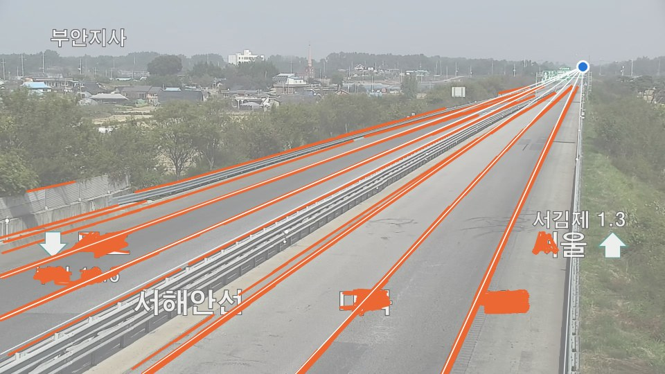
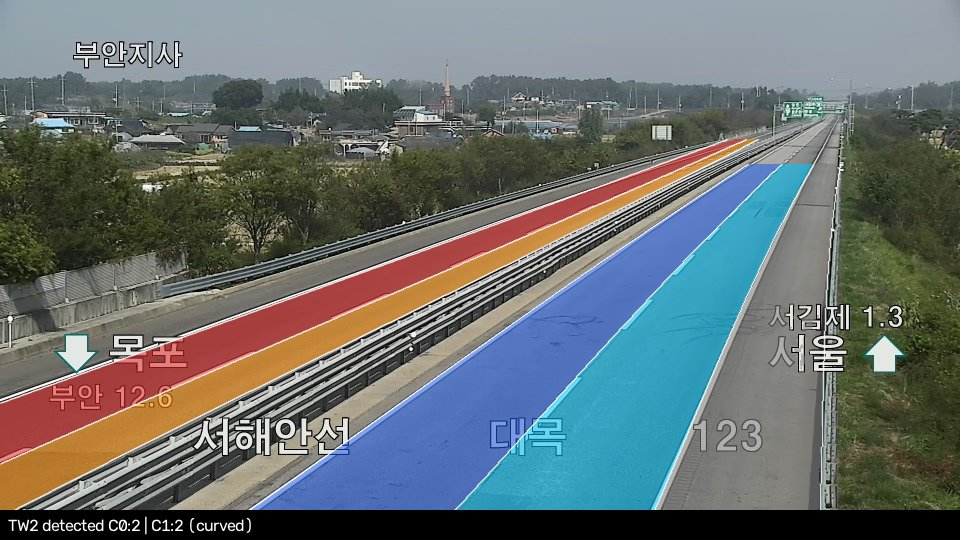
원근 때문에 차선은 사진에서 비스듬하고 멀수록 좁아져요. 하지만 모든 차선은 소실점에서 뻗어 나온 직선이에요. 그래서 픽셀마다 "소실점에서 본 각도"를 계산하면, 차선 하나가 각도 값 하나로 표현돼요.
이렇게 하면 "사진에서 차로를 나누는 문제"가 "각도 축 위에서 구간을 나누는 1차원 문제"로 바뀌어요. 아래 2-4, 2-5가 모두 이 각도 축에서 이뤄져요.
| 한 일 | 중앙분리대로 나뉜 방향별 도로(carriageway)를 찾음 |
|---|---|
| 기술 | 각도마다 그 방향 광선 위 픽셀 중 도로 비율과 분리대 비율을 계산 → 도로 비율 0.3 이상이면서 분리대 비율이 0.1 미만인 각도가 끊기지 않고 이어지는 구간 = 방향별 도로 |
| 왜 | 처음에는 도로 픽셀 덩어리(연결 요소)로 나눴는데, 다리 기둥이 도로를 가리면 한 도로가 쪼개지고 안개로 분리대가 안 보이면 양쪽이 붙음. 광선 단위 비율은 일부가 가려져도 흔들리지 않음 |
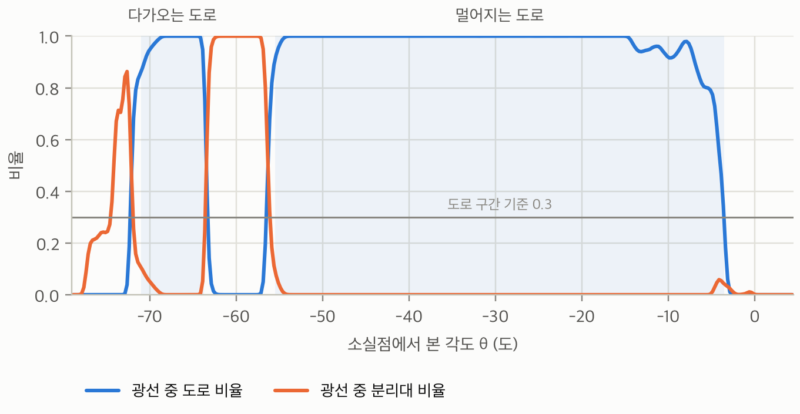
| 한 일 | 방향별 도로 안에서 차선이 있는 각도 = 차로 경계를 찾음 |
|---|---|
| 기술 | 차선 도색 픽셀의 각도 히스토그램(먼 곳 픽셀이 적게 잡히는 것을 보정하는 거리 가중치 적용) → 가우시안 스무딩 → 봉우리 검출(SciPy find_peaks) |
| 잡음 제거 | 노면 글씨("대전 수원 신갈")나 화면 자막은 도색으로 잡히지만 소실점 방향으로 길쭉하지 않음 → 길이 ÷ 폭이 2.5 이상인 도색 조각만 사용 |
| 대안 | 눈·안개로 도색이 안 보이면 차량 바닥점의 각도 봉우리를 차로 중심으로 쓰고 그 중간을 경계로 삼음 (차는 차로 가운데로 달림) |
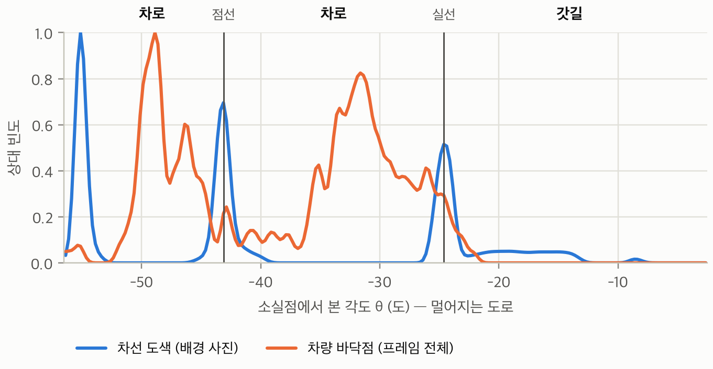
| 한 일 | 가장자리 칸이 차로인지 갓길(또는 빈 포장면)인지 판정 |
|---|---|
| 단서 ① | 실선/점선: 교통 규칙상 갓길은 실선(가장자리선), 차로 사이는 점선(도색 8m·빈칸 12m). 경계선을 따라 4px마다 배경 사진 밝기로 도색 여부를 봐서, 밝은 비율 0.85 이상이고 2토막 이하이면 실선. 밝은 비율 0.15 미만이면 가짜 경계로 보고 삭제 |
| 단서 ② | 차량 이용률: 가장 붐비는 차로 대비 그 칸의 바닥점 수. 운전자 기준 바깥쪽 칸은 안쪽 경계가 실선이면 60% 미만, 아니면 20% 미만일 때 갓길. 중앙분리대 쪽은 40% / 10% |
| 왜 | 차량 수만으로는 안 됨: 바퀴 위치가 번진 갓길(15~38%)과 트럭이 적게 다니는 바깥 차로(32%)가 겹침. 분할 모델은 점선 사이를 이어 칠해서 도색 비율로도 구분이 안 됨(점선 0.93, 실선 1.00) → 원본 밝기 사용 |
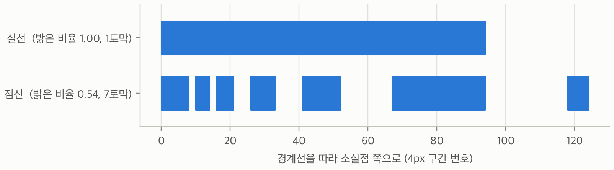
이 규칙을 넣고 차로 수 정확도가 43% → 49%로 올랐어요(시험 83장면 기준). 반대로 "같은 높이의 차로 폭은 같다"는 규칙으로 좁은 조각을 합치는 방법은 진짜 차로까지 합쳐서(±1 이내 96% → 83%) 되돌렸어요.
| 문제 | 클립마다 따로 도로를 찾으니 같은 카메라인데도 결과가 흔들림(고정 화면 카메라 39대 중 30대). 밤·비·흐린 차선인 클립이 특히 틀림(밤 정확 22%) |
|---|---|
| 아이디어 | 고정 카메라는 날짜가 달라도 도로 모양이 같음 → 같은 화면의 장면을 묶어 좋은 장면의 도로 지도를 함께 씀. 실제로 고정 화면 카메라 42대 중 37대는 적어도 한 클립에서 차로 수를 맞혔음 |
| 같은 화면 묶기 | 도로 분할 결과의 도로 영역 IoU 0.75 이상이고 위치 어긋남 40px 이하(위상 상관으로 보정). 윤곽선 유사도는 낮·밤 조명에 흔들려서 쓰지 않음(낮-밤 쌍 중앙값: 윤곽선 0.27, 도로 IoU 0.87) → 그룹 106개, 2장면 이상 그룹 69개(250장면) |
| 합치는 법 (G) | 카메라마다 조건이 가장 좋은 장면(낮 → 소실점 강함)을 기준으로 삼음. 도로·분리대는 그룹 전체의 가중 투표(밤 가중치 0.4)로 정함. 차선 도색은 기준 장면이 좋으면 기준 것을 쓰고, 약하면(밤이거나 소실점 강도 하위 1/3) 투표로 정함 |
| 왜 G | 7가지 방식을 비교함. 기준 장면만 공유하면 정확 비율이 오르고, 차선 도색까지 투표하면 크게 틀리는 경우가 줄지만 날짜마다 조금씩 어긋난 도색이 두 겹이 돼 차로를 많게 셈. 차량 바닥점까지 모으면 오히려 나빠짐. G가 두 지표를 함께 올림 |
| 방식 | 전체 정확 | 전체 ±1 | 수원 제외 정확 | 수원 제외 ±1 |
|---|---|---|---|---|
| 적용 전 (클립마다 따로) | 41% | 77% | 52% | 90% |
| 기준 장면 공유만 | 46% | 78% | 55% | 88% |
| 차선 도색까지 전부 투표 | 39% | 85% | 41% | 93% |
| 도로·분리대 투표 + 기준 장면 도색 | 47% | 78% | 58% | 88% |
| G (기준 장면 품질에 따라 위 둘 중 선택) | 48% | 82% | 58% | 92% |
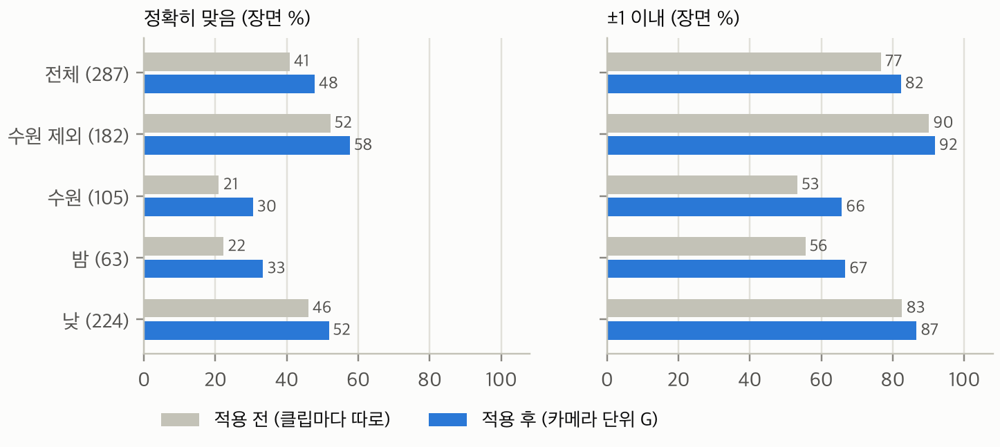
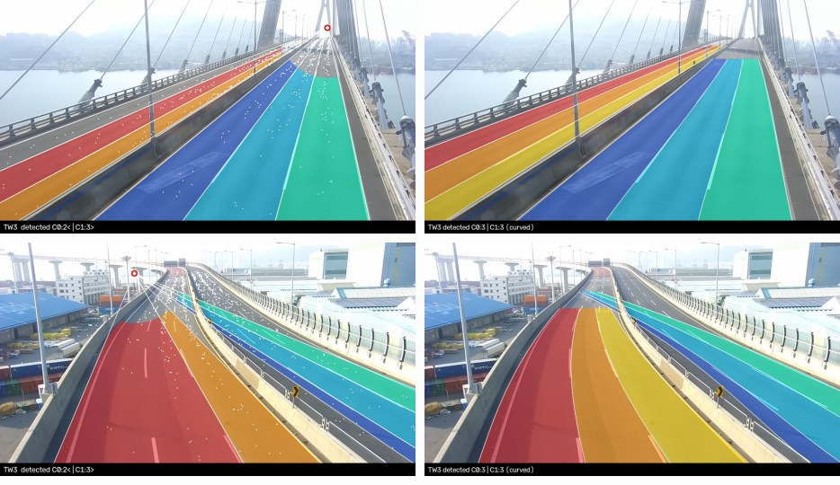
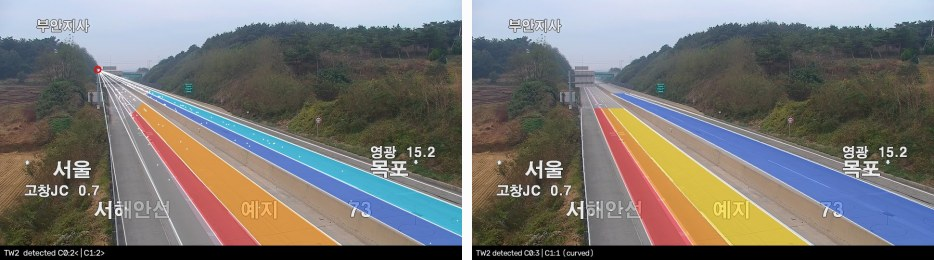
부안 예지는 적용 전 2/2로 맞았는데, 기준 장면의 차선 도색이 이 클립과 맞지 않아 3/1이 됐어요(오른쪽 도로의 두 차로가 합쳐짐). 7가지 방식을 같은 정답으로 비교해 골랐기 때문에, 새 데이터에서는 개선 폭이 이보다 작을 수 있어요.
| 문제 | 모든 차선을 "소실점에서 뻗은 직선"으로 봐서, 도로가 휘면 차로 띠가 곡선을 가로지름. 먼 곳이 휘어 있으면 소실점까지 끌려가 가까운 곳 차로도 틀어짐. 먼 곳 차선이 4° 넘게 휜 장면이 전체의 3분의 1(94개)이고 정확도가 곧은 도로의 절반 수준(아래 왼쪽 표) |
|---|---|
| 시도 1 (버림) | 곧은 가까운 구간만으로 차로 수 세기 → 가까운 곳에는 점선·차량 점이 적어 전체 정확 41% → 28%로 나빠짐 |
| 시도 2 (버림) | 경계선마다 따로 곡선을 따라가기 → 옆 차선 도색에 달라붙어 경계끼리 엇갈림 |
| 채택 | 공통 휨 곡선: 방향별 도로마다 휨 곡선 g(y) 하나를 두고, 모든 경계를 "소실점 직선 + g(y)"로 함께 휘게 함. 실제 차선은 평행하게 휘므로 경계가 엇갈리지 않고, 곧은 도로에서는 g ≈ 0이라 원래 결과와 같음. g는 그 도로의 차선 도색·가장자리 점을 도로가 보이는 가장 아래 행부터 위로 넓혀 가며 릿지 다항식으로 맞추고 튀는 점은 버림. 근거가 끝난 위쪽은 마지막 휨 값으로 이어 칠함 |
| 바뀌는 것 | 차로 모양만 바뀜. 차로 수·방향·갓길은 2-7 결과 그대로라 차로 수 정확도는 같음 |
| 먼 곳 휜 정도 | 장면 | 정확 | ±1 |
|---|---|---|---|
| 곧음 (2° 미만) | 134 | 57% | 86% |
| 약간 휨 (2~4°) | 50 | 54% | 82% |
| 휨 (4~8°) | 36 | 39% | 69% |
| 많이 휨 (8° 초과) | 58 | 22% | 81% |
휜 정도별 차로 수 정확도 (2-7 적용 후)
| 먼 곳 휜 정도 | 직선 지도 | 곡선 지도 |
|---|---|---|
| 곧음 | 0.176 | 0.160 |
| 약간 휨 | 0.194 | 0.174 |
| 휨 | 0.222 | 0.198 |
| 많이 휨 | 0.213 | 0.196 |
차로 중심 이탈도 (낮을수록 좋음). 차는 차로 가운데로 달리므로, 같은 차량 바닥점이 차로 한가운데(0)에서 경계(0.5) 쪽으로 얼마나 벗어났는지 비교. 전체 287장면 중 166개 좋아짐, 64개 나빠짐. 차량이 차로 안에 들어오는 비율 52% → 62%
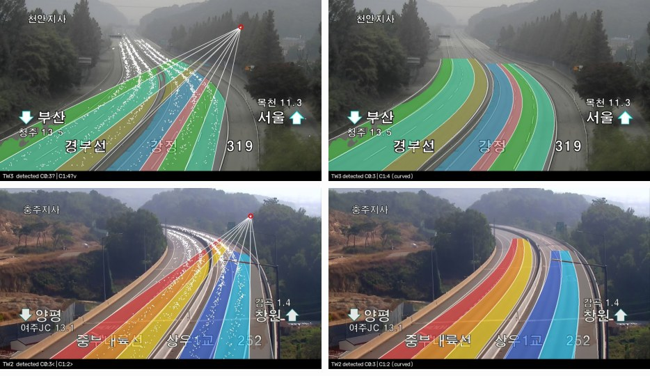
| 기하 규칙 | 우측통행: 카메라가 어느 쪽을 보든 화면 왼쪽 도로는 다가오고, 오른쪽 도로는 멀어짐. 양쪽 차량 수가 가장 고르게 나뉘는 분리대를 중앙분리대로 봄. 단, 한쪽 도로만 보이는 화면에서는 쓸 수 없음 |
|---|---|
| 자동 라벨 | 기하 규칙이 양방향으로 판정했고 차로 수가 파일명과 ±1 이내인 장면만 골라, 다가오는 도로의 차 = 앞모습, 멀어지는 도로의 차 = 뒷모습으로 라벨 → 차량 사진 27,288장(112×112) |
| 모델 | ResNet18(ImageNet 사전학습) 전이학습. 마지막 층을 2클래스로 교체 → ① 출력층만 2 epoch(lr 1e-3) → ② 전체 4 epoch(lr 1e-4, AdamW, cosine). 증강: 좌우 뒤집기(뒤집어도 앞모습은 앞모습), 색 변화, 부분 자르기 |
| 평가 | 카메라 단위로 분리: 학습 25대 18,604장 / 검증 5대 4,051장 / 시험 6대 4,633장. 같은 카메라가 학습·시험에 섞이면 배경을 외워서 점수가 부풀려짐 |
| 비교 기준 | CLIP zero-shot(ViT-L/14): 학습 없이 "헤드라이트가 보이는 앞모습" / "번호판·후미등이 보이는 뒷모습" 문장과 사진의 유사도로 판정 |
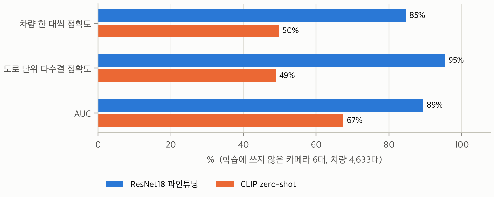
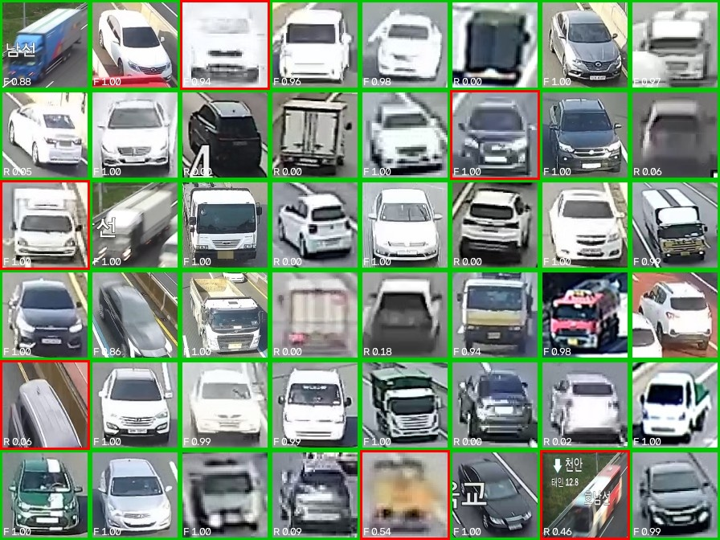
시험 사진 예측 예시. 초록 테두리는 맞음, 빨강 테두리는 틀림. F = 앞모습, R = 뒷모습, 숫자 = 앞모습 확률.
흐리거나 작은 차, 위에서 내려다본 차에서 주로 틀려요.
카메라 단위 도로 지도(2-7)와 휜 도로 곡선 보정(2-8, 차로 수는 바꾸지 않음)까지 적용한 최종 결과를 파일 이름의 차로 수와 비교하면 전체 287장면 중 48%가 정확히 맞고 82%가 ±1 이내예요(적용 전 41% / 77%). 수원을 빼면 58% / 92%이고, 수원만 보면 30% / 66%예요.
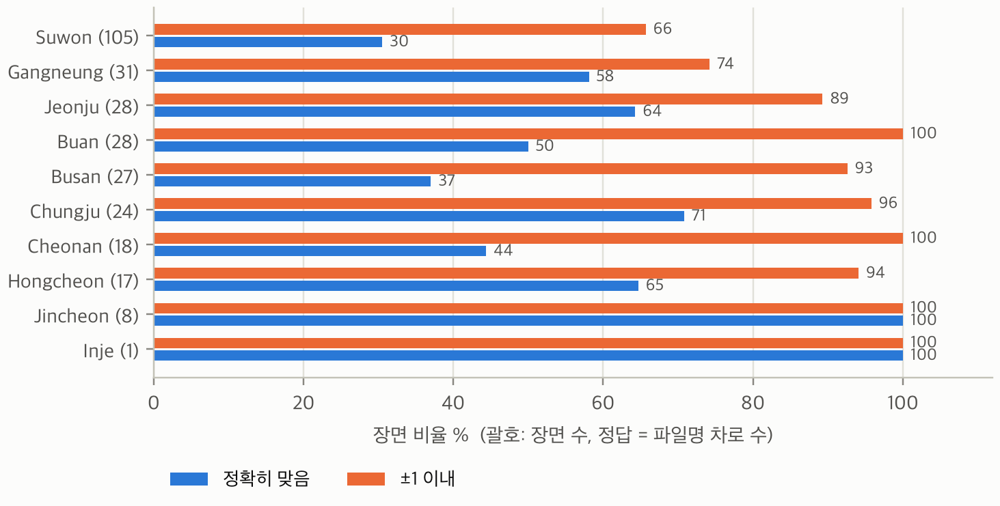
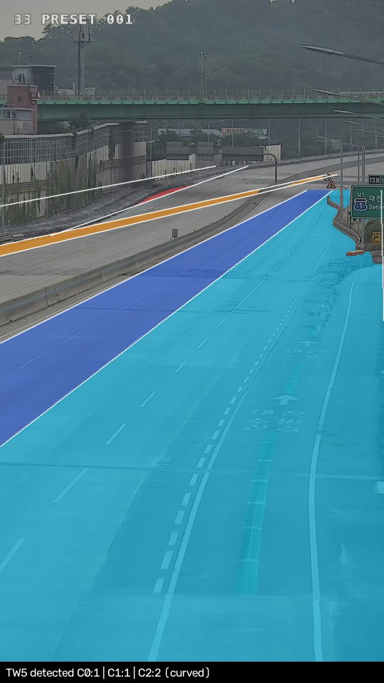
카메라 단위 지도로 반대편 도로(위쪽)는 분리됐지만, 본선 여러 차로와 진출로가 여전히 하늘색 한 칸으로 합쳐져 있어요. 도로가 휘고 진출로가 갈라지는 화면이라 소실점 하나로는 차선 경계를 못 찾아요.
좋은 사례만 보고 판단하면 과대평가하기 쉬워서, 무작위로 뽑은 24개 장면의 최종 차로 지도를 직접 확인했어요. 제대로 된 장면 약 6개, 일부만 맞는 장면 약 8개, 확실히 틀린 장면 약 10개였어요. 파일 이름 기준 정확도(48%)보다 실제 품질이 낮아서 발표 전에 보강이 필요해요.
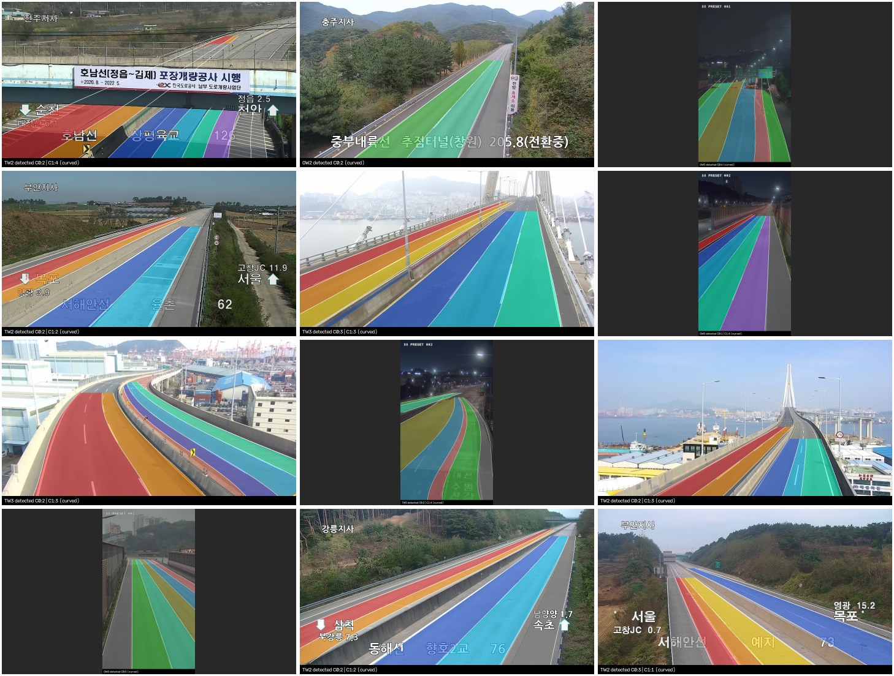
| 유형 ① | 차로 수 자체가 틀림 (가장 많음): 부산 1교 오른쪽 도로가 얇은 띠 3개로 쪼개지고, 강릉 위촌2교는 2차로가 4개로 나뉨. 반대로 수원 CH04는 5차로가 큰 칸 2개로 합쳐짐 |
|---|---|
| 유형 ② | 경계선이 실제 차선 도색 위에 있지 않음: 차로 수는 맞아도 칸이 차선과 비껴 있음 |
| 유형 ③ | 수원 세로·야간 화면: 모양이 이상하거나 차로가 가로로 잘리고 중간에 색이 바뀜 |
| 한계 이유 | 차선을 직접 따라가지 않고 "소실점에서 본 각도 분포의 봉우리"로 경계를 추정함. 봉우리가 한 칸 어긋나면 차로 수와 경계가 함께 틀어지고, 곡선 보정(2-8)은 모양만 바꿔서 이 오류를 못 고침 |
| 보강 방향 | 방법 | 기대 효과 | 한계 · 작업량 |
|---|---|---|---|
| 1. 차선을 직접 이어서 찾기 | 차선 도색 조각을 방향이 이어지는 것끼리 연결해 실제 선 모양 그대로 곡선을 만들고, 선과 선 사이를 차로로 봄 | 경계가 도색 위에 정확히 놓임, 곡선·합류 처리 | 도색이 흐린 밤·비·수원 화면은 약함 · 1~2일 |
| 2. 차가 실제로 다닌 길로 찾기 | 같은 화면 차량 수천 대의 바닥점이 몰린 줄기를 따라 차로 중심선을 찾음 | 차로 수가 "실제로 쓰는 차로" 기준, 도색이 흐려도 됨 | 차가 적은 차로는 놓치고 경계는 덜 정확함 · 1일 (1번과 합치면 보완) |
| 3. 화면마다 한 번 검수 + 모델 학습 (추천) | 자동 결과를 띄워 틀린 선만 클릭으로 고침. 고정 카메라라 화면 약 110개만 고치면 사진 2만 장 전체에 적용됨. 이 정답으로 U-Net·SegFormer(D08) 학습 | 차로 지도가 거의 정확해지고, 진짜 정답으로 정확도를 제대로 잴 수 있음 | 사람 시간 필요(화면당 1~2분, 6명이 나누면 30분 정도) · 도구 반나절 + 학습 1~2일 |
원래 주제의 "도로 대비 차량 면적 비"를 차로 하나하나, 방향 하나하나에 대해 계산했어요. 도로 전체 값도 함께 계산해서 비교할 수 있어요.
| 한 일 | 프레임마다 각 차량을 바닥점이 속한 차로에 배정. 차로 밖 15px 이내면 가장 가까운 차로로 |
|---|---|
| 기술 | 거리 변환(SciPy distance_transform_edt)으로 픽셀마다 가장 가까운 차로를 미리 계산 |
| 왜 | 차량 마스크 전체로 배정하면 차 높이 때문에 옆 차로에 걸친 차가 두 번 세어짐 |
| 한 일 | 차로 안에서 그 차로에 배정된 차량이 덮은 비율. 먼 차부터 칠해서 가까운 차가 먼 차를 가리게 함 |
|---|---|
| 문제 | 사진에서는 가까운 차가 크게, 먼 차가 작게 보여서 픽셀 비율을 그대로 쓰면 가까운 곳의 차만 중요해짐 |
| 기술 | 평평한 도로를 카메라로 보면 사진 한 줄이 담는 실제 도로 길이는 1 / 차로폭²에 비례 → 줄마다 이 가중치를 곱해 실제 도로 길이 기준 비율로 바꿈 |
처음에는 모든 줄에 가중치를 줬더니, 멀리 있는 차 한 대가 차 높이만큼 여러 줄을 가려서 한산한 도로의 상위 10% 점유율이 68%로 나왔어요. 그래서 차로 최대 폭의 30% 이상인 가까운 구간만 쓰도록 바꿨고, 같은 차로가 10~23%로 현실적인 값이 됐어요.
결과: 287장면, 차로×프레임 122,879건 — 갓길 포함 (outputs/s3/lane_frames.csv, group_frames.csv)
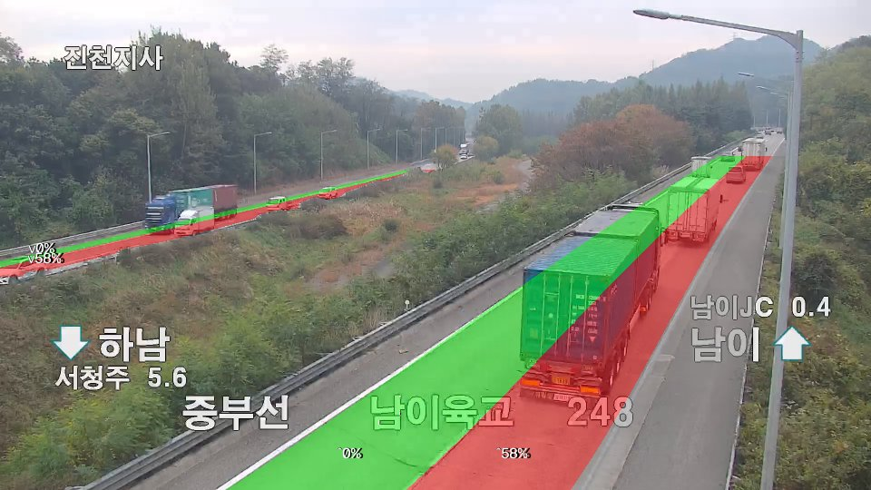
전체 20,691개 프레임 중 16.3%(160개 장면)는 도로 전체로 평균 내면 "원활"인데, 어느 한 차로는 "서행" 이하였어요. 원래 주제 방식(도로 전체 평균)으로는 보이지 않는 정체예요.
이 장면의 약 6분(103장) 동안 차로별 평균 점유율은 18% · 9% · 6% · 1%였어요. 같은 도로 안에서도 차로마다 몇 배씩 차이가 났어요(아래 그래프).
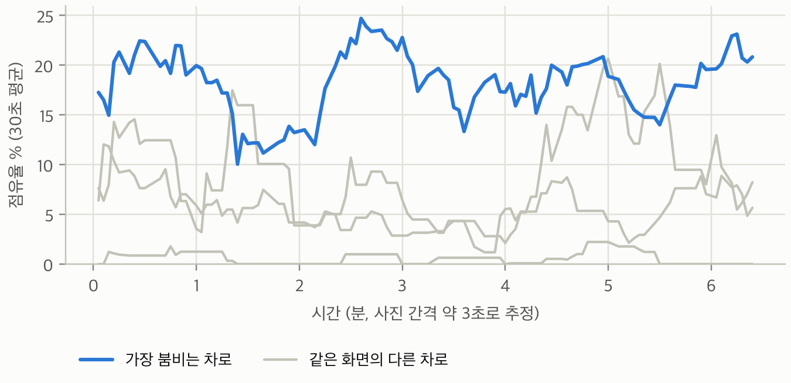
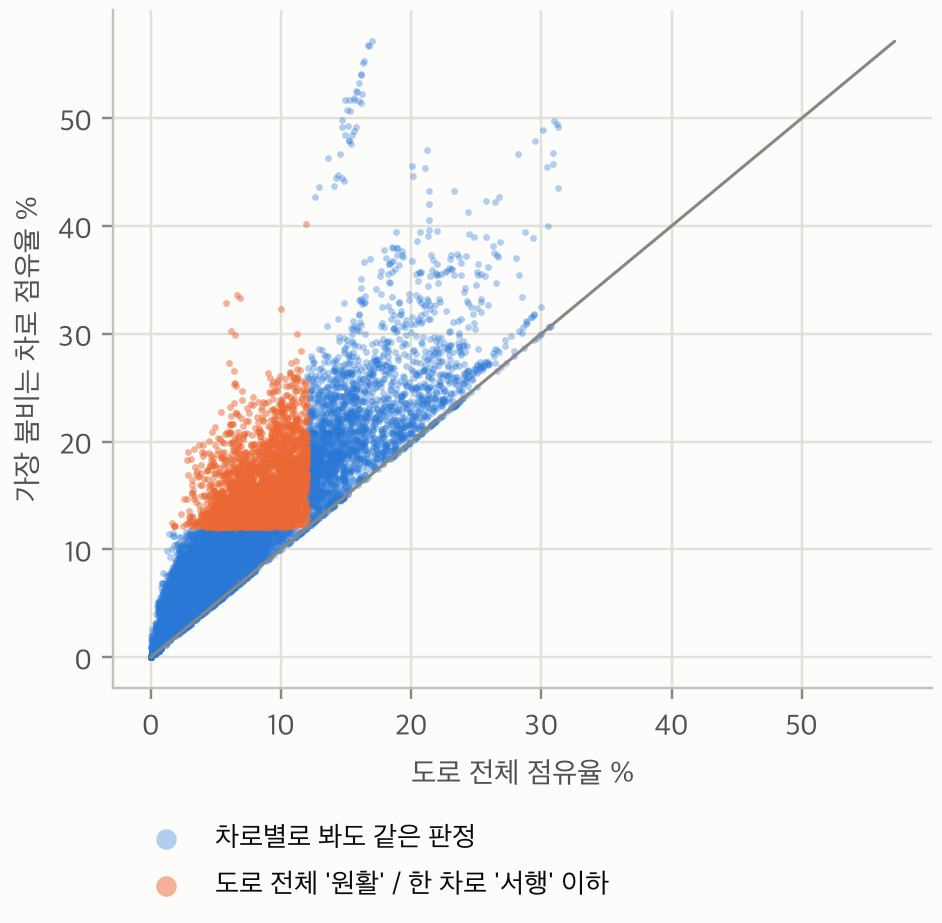
점 하나가 프레임 하나예요. 대각선보다 위에 있을수록 한 차로에 정체가 몰려 있다는 뜻이에요. 주황 점이 숨은 정체 프레임이에요.
우회로를 추천하려면 "지금 얼마나 지체되는지"와 "15분~1시간 뒤 얼마나 막힐지"가 필요해요.
→ 그래서 사진 한 장의 혼잡도로 지금의 지체 시간을 추정하고, 장기 예측은 외부 데이터가 필요한 다음 단계로 남겼어요.
| 모형 | Greenshields 속도-밀도 모형 (교통공학의 기본 모형): 밀도가 높을수록 속도가 직선으로 줄어듦. 점유율이 밀도에 비례한다고 보고 바꿔 씀 |
|---|---|
| 자유 속도 | 100 km/h (고속도로) |
| 정체 점유율 | 0.6 = 평균 차량 길이 약 4.5m ÷ 정체 시 차간 약 7.5m. 데이터 상위 1%(0.38)를 쓰면 이 데이터가 대부분 원활이라 점유율 7%만 넘어도 "서행"이 돼서 쓰지 않음 |
| 처리 | 프레임마다 튀는 값을 줄이려고 30초 이동평균(10장) 후 계산. 최저 속도 5 km/h |
| 등급 | 원활 80 km/h 이상 · 서행 40~80 · 정체 40 미만 (잠정 — 한국도로공사 공식 기준 확인 필요). 방향 전체 지체가 1km당 1분 이상이면 우회 검토 |
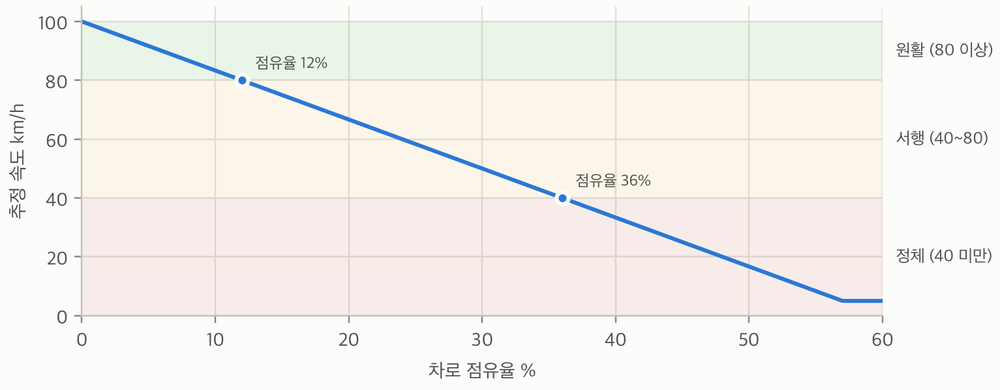
| 기준 | 원활 | 서행 | 정체 |
|---|---|---|---|
| 차로 × 프레임, 갓길 제외 (100,555건) | 88.6% | 11.3% | 0.1% |
| 장면 × 방향, 중앙값 (486개) | 425개 | 61개 | 0개 |
우회 검토 대상은 없었어요(방향별 지체 중앙값 최대 1km당 0.44분). AI-Hub 영상은 대부분 소통이 원활한 시간대라 자연스러운 결과예요.
| 단계 | 부분 | 기술 | 라이브러리 | 수업 연결 |
|---|---|---|---|---|
| 준비 | 차량 찾기 | YOLO26m-seg (COCO 사전학습) | ultralytics | CNN (DL5) |
| 준비 | 차 없는 배경 | 차량 픽셀 제외 중앙값 | NumPy, OpenCV | — |
| 준비 | 화면 분리 | KMeans + 실루엣 점수, 윤곽선 상관계수 | scikit-learn, OpenCV | 군집분석 (C02) |
| 2 | 도로·도색·분리대 | Mask2Former (Swin-L, Mapillary Vistas) | transformers | Transformer·attention (D06) |
| 2 | 소실점 | Hough 변환 + RANSAC + 가중 최소제곱 | OpenCV, NumPy | 최소제곱 (B01) |
| 2 | 방향별 도로·차로 | 각도 좌표, 비율 프로파일, 히스토그램 봉우리 검출 | SciPy | — |
| 2 | 갓길 | 밝기 기반 실선/점선 판정, 차량 이용률 | OpenCV | — |
| 2 | 카메라 단위 지도 | 도로 영역 IoU로 같은 화면 묶기, 위상 상관 위치 보정, 가중 투표 | OpenCV, NumPy | 앙상블 (M02) |
| 2 | 휜 도로 보정 | 공통 휨 곡선 (릿지 다항식, 튀는 점 제거) | NumPy | 선형회귀·정규화 (M01, D03) |
| 2 | 방향 | ResNet18 전이학습 vs CLIP zero-shot, 카메라 단위 분할 | PyTorch, torchvision | ResNet (DL5), 파인튜닝·CLIP (D07), 평가지표 (C01) |
| 3 | 차로 배정·점유율 | 거리 변환, 원근 가중 (1/차로폭²) | SciPy, OpenCV | — |
| 4 | 지체 | Greenshields 속도-밀도 모형, 이동평균 | pandas | — |
팀프로젝트/road_lane/)run_all.sh | 전체 실행 (Apple M5 약 3시간, 대부분 차량 단계) |
s1_vehicles.py | 차량 찾기 · 배경 |
s1b_views.py | 화면 분리 |
s2_road_lanes.py | 도로·방향별 도로·차로 |
s2c_camera_groups.py | 카메라 단위 도로 지도 |
s2d_curves.py | 휜 도로 곡선 보정 |
s2b_direction.py | 방향 CNN |
s3_occupancy.py | 차로별 혼잡도 |
s4_delay.py | 지체 추정 |
report.py | 발표용 수치·그림 |
실행 방법과 출력 폴더 설명은 README.md에 있어요.
6장 다음 단계 후보 1~3을 바로 손댈 수 있게 풀어 쓴 장이에요. ① 어디서 틀렸는지 찾고(7-1) → ② 정해진 절차로 실험하고(7-2) → ③ 할 일 목록에서 하나 골라요(7-3). 줄 번호는 2026-09-15 코드 기준이에요.
앞 관문이 틀리면 뒤는 전부 틀려요. 그래서 틀린 장면은 ①부터 순서대로 확인해요. 그림과 파일은 모두 결과폴더/s2/장면이름/ 안에 있어요.
| 관문 | 어디서 보나 | 틀리면 이렇게 보여요 | 건드릴 곳 (따로 적지 않으면 s2_road_lanes.py 줄) |
|---|---|---|---|
| ① 도로 분할 Mask2Former | lanes_vis.jpg의 색칠 범위 | 도로 일부가 안 칠해지거나, 흙·풀밭·진입로까지 칠해짐 | 36줄 ROAD_IDS(도로로 볼 클래스), 39줄 SEPARATOR_IDS(분리대로 볼 클래스) |
| ② 소실점 | 흰 경계선이 모이는 빨간 원, lanes.json의 vp_support(1에 가까울수록 확실) | 흰 선이 실제 차선과 다른 각도로 뻗음. vp_support 하위 1/3 장면은 정확 22% | 111줄 직선 허용 각도 1.5°, 106줄 화면 아래쪽 가중치, 148줄 "도로 가장자리 선까지 쓸지" 기준 400 |
| ③ 방향별 도로 | 붉은 계열(다가옴)·푸른 계열(멀어짐) 색 | 양쪽 도로가 한 색 계열로 붙거나, 한 도로가 둘로 끊김 | 42줄 ROAD_COVER_MIN 0.3, 43줄 SEP_COVER_CUT 0.1 |
| ④ 차로 경계 | 흰 경계선, lanes.json의 boundaries (paint_cov = 선을 따라 도색이 보이는 비율) | 얇은 띠로 쪼개짐(많이 셈) / 두 차로가 한 칸(적게 셈) | 326줄 봉우리 찾기, 208줄 좁은 칸 기준 0.4, 46줄 PAINT_MIN_COV 0.15, 166줄 길쭉함 2.5, 333~338줄 차량 대안 |
| ⑤ 갓길 빼기 | 회색 칸, lanes.json의 shoulder | 갓길·빗금 구역·합류 차로가 색칠됨 / 차가 다니는 칸이 회색 | 356줄 이용률 한도, 47줄 SOLID_COV 0.85(실선 판정) |
| ⑥ 카메라 단위 지도 2c | lanes_single_vis.jpg(적용 전)와 lanes_vis.jpg 비교 | 적용 전엔 맞았는데 적용 후 틀림 (23장면) | s2c_camera_groups.py 151줄 group_geometry, 251줄 apply |
| ⑦ 곡선 보정 2d | lanes_straight_vis.jpg(보정 전)와 비교 | 경계가 차선을 따라가다 튐 | s2d_curves.py. 차로 모양만 바꾸므로 차로 수 문제면 건드리지 않아요 |
| 방향별 도로 (최종 결과) | 개수 | 정확 | 많이 셈 | 적게 셈 |
|---|---|---|---|---|
| 수원 제외 | 340 | 73% | 17% | 10% |
| 수원 | 129 | 29% | 7% | 64% |
파일 이름 차로 수와 비교했고, 방향별 도로 하나를 한 개로 셌어요 (장면 단위 48%와 세는 기준이 달라요).
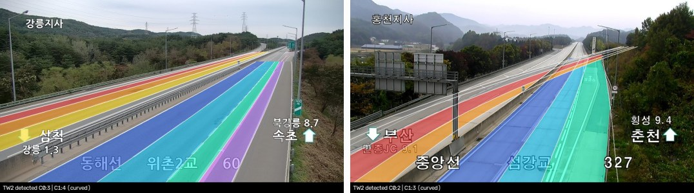
차량 검출(약 1시간)과 Mask2Former(장면당 약 5초)는 차로 코드를 고쳐도 결과가 같아서 다시 돌리지 않아요. 그 결과만 새 폴더에 복사하면 도로·차로 단계(2 → 2c → 2d)가 약 4분, 방향 적용·3·4단계까지 합쳐 약 7분(Apple M5)이면 끝나요.
ROAD_LANE_OUT=runs/내이름 ./run_all.sh를 한 번 끝까지 돌린 폴더예요. 이미 있으면 건너뛰어요.lanes_single.*, lanes_straight.*)을 읽어서 고친 결과가 무시돼요.
cd 팀프로젝트/road_lane BASE=runs/내이름 EXP=runs/실험이름 mkdir -p $EXP && cp -R $BASE/s1 $BASE/s2b $EXP/ for d in $BASE/s2/*/; do n=$(basename $d); mkdir -p $EXP/s2/$n; cp $d/seg.png $EXP/s2/$n/; done
PY=../.venv/Scripts/python.exe)
export ROAD_LANE_OUT=$EXP PY=../.venv/bin/python $PY s2_road_lanes.py # 2 끝에 2c 적용 전 정확도가 나와요 $PY s2c_camera_groups.py --apply G # 2c 카메라 단위 지도 $PY s2d_curves.py apply # 2d 곡선 보정 $PY s2b_direction.py apply # 방향 적용 (학습은 다시 안 해요) $PY s3_occupancy.py && $PY s4_delay.py && $PY report.py $PY compare_runs.py $BASE $EXP # 차로 수·방향·혼잡도 지표 비교
$EXP/s2/장면이름/lanes_vis.jpg로 열어 봐요.
$PY -c "import pandas as pd,sys; a,b=[pd.read_csv(f+'/s2_summary.csv').set_index('scene_id') for f in sys.argv[1:]]; d=a.main_lanes.astype(str)!=b.main_lanes.reindex(a.index).astype(str); print(pd.DataFrame({'token':a.token,'before':a.main_lanes,'after':b.main_lanes.reindex(a.index)})[d].to_string())" $BASE $EXPs2_summary.csv의 camera가 Suwon으로 시작).| # | 할 일 | 고치는 오류 | 시간 | 효과 |
|---|---|---|---|---|
| 0 | 채점표 만들기 (사람이 센 정답) | 파일 이름 정답의 오류, 과적합 | 사람 약 30분 | 모든 실험의 기준 |
| 1 | 흐린 경계 삭제 순서 바꾸기 | 차로가 1개로 나옴 | 코드 5분 | 확인함: ±1 82.2 → 84.0%, 나빠진 장면 0 |
| 2 | 갓길·빗금·합류 칸 빼기 | 많이 셈 (수원 밖 1위) | 반나절 | 미확인 |
| 3 | 가짜 경계 줄이기 | 얇은 띠로 쪼개짐 | 반나절 | 미확인 |
| 4 | 2c에서 자기 결과 지키기 | 2c로 나빠진 23장면 | 반나절 | 미확인 |
| 5 | 수원은 따로 다루기 | 적게 셈 (수원) | 1~2시간 | — |
| 6 | 사람 검수 + 분할 모델 학습 | 전부 | 1~2일 | 가장 확실 |
발표(9/22) 전이라면 0 → 1 → 2나 3 중 하나 → 5, 발표 뒤에 4·6을 추천해요. 할 일 0은 6명이 나누면 한 사람당 5분이에요.
| 왜 | 파일 이름 차로 수는 불완전한 정답이에요(OW인데 반대편 도로가 보이는 화면 등). 파일 이름 기준 정확도는 48%인데, 2-11에서 무작위 24장면을 눈으로 보니 제대로 된 건 약 6개(25%)였어요. 같은 정답에 맞춰 여러 번 고치면 점수만 올라가기도 해요. |
|---|---|
| 얼마나 | 화면이 서로 다른 장면은 106개뿐이에요(2c가 묶은 그룹 수). 그룹마다 기준 장면 하나만 세면 같은 그룹의 287장면 모두에 적용돼요. |
$BASE/s2c_groups.json에서 그룹마다 "ref" 장면 이름을 모아요 (106개).$BASE/s1/클립이름/background.jpg. 장면 이름 끝에 __view0이 붙어 있으면 view0/background.jpg예요. 색칠된 결과 그림을 보면 판단이 흔들리니 보지 않아요.road_lane/truth.csv에 한 줄씩 적어요. 본선만, 갓길 빼고, 화면 왼쪽 도로부터 /로 이어서 적고, 헷갈리면 ?를 적어요.
scene_id,lanes Buan_daemog_20201019_1730_MON_15m_NH_highway_TW2_sunny_FHD,2/2 Busan_busanportbrdg4_20201027_1530_TUE_8m_NH_highway_TW3_sunny_FHD,?
road_lane/score_truth.py로 저장하고 $PY score_truth.py $BASE $EXP로 채점해요.
"""사람이 센 채점표로 채점: python score_truth.py runs/내이름 runs/실험이름"""
import json, sys
from pathlib import Path
import pandas as pd
truth = pd.read_csv("truth.csv", dtype=str) # scene_id,lanes (예: 2/2, 모르면 ?)
truth = truth[truth.lanes != "?"].set_index("scene_id").lanes
groups = json.loads((Path(sys.argv[1]) / "s2c_groups.json").read_text())
want = {m["scene_id"]: truth[g["ref"]] # 기준 장면 정답을 그룹 전체에
for g in groups if g["ref"] in truth for m in g["members"]}
for out in sys.argv[1:]:
hit = {True: [], False: []} # 수원이면 True 쪽에
for sid, lanes in want.items():
geo = json.loads((Path(out) / "s2" / sid / "lanes.json").read_text())
k = lanes.count("/") + 1 # 정답에 적은 도로 수
cws = sorted(geo.get("carriageways", []), key=lambda c: -c["n_points"])[:k]
cws = sorted(cws, key=lambda c: c["theta"][0]) # 화면 왼쪽부터
got = "/".join(str(c["n_lanes"]) for c in cws)
hit[sid.startswith("Suwon")].append(got == lanes)
a, s = hit[True] + hit[False], hit[False]
print(f"{out}: 정확 {sum(a)}/{len(a)} ({sum(a)/len(a):.0%}), "
f"수원 제외 {sum(s)}/{len(s)}")| 문제 | 지금 코드는 ⓐ 차선 봉우리가 하나도 없을 때만 차량 바닥점으로 차로를 나누고(333줄), ⓑ 그다음에 배경 사진에서 도색이 안 보이는 가짜 경계를 지워요(340~343줄). 봉우리는 있었지만 전부 가짜여서 ⓑ에서 다 지워지면, 차량 대안을 써 보지도 못하고 차로 1개로 끝나요. |
|---|---|
| 고치기 | ⓑ를 ⓐ 앞으로 옮겨요. s2_road_lanes.py 329~343줄 (초록 줄 추가, 빨간 줄 삭제): |
bounds = drop_narrow(bounds, strength)
c["lane_source"] = "markings"
+ bounds = [bounds[0]] + [
+ t for t in bounds[1:-1]
+ if boundary_paint(t, theta, radius, road_zone, gray, asphalt)[0] >= PAINT_MIN_COV
+ ] + [bounds[-1]]
cpts = pt_theta[pt_ok & (pt_theta >= tmin) & (pt_theta < tmax)]
if len(bounds) == 2 and len(cpts) >= 30:
... # 차량 대안은 그대로
- if c["lane_source"] == "markings": # 340~343줄 네 줄 모두
- # 배경 사진에서 도색이 거의 안 보이는 경계(…)는 없앤다
- bounds = [bounds[0]] + [t for t in bounds[1:-1]
- if boundary_paint(…)[0] >= PAINT_MIN_COV] + [bounds[-1]]
| 이 문서를 쓰며 해 본 결과 (파일 이름 기준, 287장면) | 정확 | ±1 이내 | 바뀐 장면 |
|---|---|---|---|
| 2c 적용 전 (2단계만) | 40.8 → 43.6% | 76.7 → 79.8% | 22개: 새로 정확 8, 정확하던 장면이 틀린 경우 0 |
| 최종 (2c·2d까지) | 47.7 → 48.1% | 82.2 → 84.0% | 9개: 새로 정확 1, 새로 ±1 5, 나빠진 장면 0 |
최종에서 효과가 작아지는 건 2c가 그룹 기준 장면의 지도를 함께 쓰기 때문이에요. 바뀐 9장면 중 8개가 수원이에요(수원 ±1 65.7 → 70.5%). 방향·혼잡도까지 돌려 compare_runs.py로 보면 방향이 정해진 도로 97.8 → 97.6%, 숨은 정체 프레임 16.3 → 16.7%이고 소통 등급이 같은 장면·그룹이 99.5%라 뒤 단계는 거의 그대로예요. 남은 일: 실제 코드에 반영 → 자기 컴퓨터에서 7-2 절차로 한 번 더 확인 → 기준 outputs/와 README 수치 갱신.
수원 밖에서 가장 흔한 오류예요(7-1 그림). 원인이 카메라마다 달라서, 먼저 위촌2교·예지·섬강교·부산 4교·상우1교의 lanes_vis.jpg를 열고 아래 표에서 맞는 줄을 찾아요.
| 그림에서 보이는 것 | 건드릴 곳 (s2_road_lanes.py) |
|---|---|
| 가장자리 칸이 갓길인데 흰 점(차량 바닥점)이 조금 찍혀 있음 | 356줄 outer_lim, median_lim = (0.6, 0.2), (0.4, 0.1). 가장 붐비는 차로 대비 차가 이 비율보다 적으면 갓길이에요. outer_lim은 바깥쪽(운전자 오른쪽), median_lim은 중앙분리대 쪽이고, 괄호 앞은 안쪽 경계가 실선일 때, 뒤는 점선일 때예요. 점선 쪽 0.2·0.1이 느슨해요 → 0.3·0.2로 올려 봐요. 주의: 추월차로는 원래 덜 붐벼서 진짜 차로가 빠질 수 있어요 |
갓길과 차로 사이가 실선인데 lanes.json의 solid가 false | 47줄 SOLID_COV 0.85 → 0.75. 실선으로 인정되면 한도가 0.6으로 넉넉해져 갓길로 빠지기 쉬워요. 흐린 날 도색을 못 잡으면 229줄 밝기 기준 asphalt * 1.25 + 8을 낮춰요 |
| 가장자리 칸 안에 빗금(사선) 도색 | 새 단서 추가: 칸 안 도색 중 소실점 방향이 아닌 조각의 비율. 166줄 elongated_markings가 버리는 조각(keep이 False)을 칸별로 세서, 많으면 갓길로 봐요. 넣을 곳은 360~369줄 갓길 반복문의 조건이에요 |
| 본선 옆에 붙었다가 사라지는 합류·진출 차로 | 규칙으로 빼기 어려워요. 채점표(할 일 0)에서 본선만 세고, 이런 카메라는 할 일 6(사람 검수)으로 고치는 게 빨라요 |
먼저 근거를 봐요. 쪼개진 장면의 lanes.json → carriageways[].boundaries에서 가짜 경계의 paint_cov(도색이 보이는 비율)와 runs(끊긴 토막 수)를 적고, 그 도로의 lane_source도 봐요. 조사해 보니 수원 밖에서 도색이 거의 없는(paint_cov 0.15 미만) 경계 37개가 전부 차량 대안(lane_source = vehicles)에서 나왔고, 그중 27개가 많이 센 도로에 있었어요(부산 1·4·6교에 30개).
상수 (s2_road_lanes.py) | 뜻 | 이렇게 바꿔 보기 |
|---|---|---|
| 333~338줄 차량 대안 | 도색 경계가 없으면 차량이 몰린 각도의 봉우리 사이를 경계로 씀. 도색 검사를 안 거쳐요 | 335줄 봉우리 기준 0.15 → 0.3, 또는 새로 만든 경계도 boundary_paint로 도색이 조금(예: 0.1 이상)은 있어야 인정. 할 일 1을 하면 차량 대안이 더 자주 동작하니 같이 봐요 |
46줄 PAINT_MIN_COV = 0.15 | 경계선을 따라 도색이 이 비율보다 적게 보이면 삭제 | 가짜 경계 값 바로 위로 (예: 0.2~0.25). 진짜 흐린 점선도 지워질 수 있어요 |
326줄 peak_positions(…, 1.5, 0.12, …/12) | 1.5 = 스무딩 폭, 0.12 = 가장 높은 봉우리 대비 이보다 낮으면 무시, /12 = 봉우리 사이 최소 간격(도로 폭의 1/12) | 0.12 → 0.2 (약한 봉우리 무시), /12 → /8 (가까이 붙은 봉우리 무시) |
208줄 0.4 * np.median(widths) | 중앙값 폭의 40%보다 좁은 칸의 경계를 없앰 | 0.5~0.6. 단 폭을 각도로 재서 화면 옆쪽 칸은 원래 좁게 나와요 → 같은 행의 픽셀 폭(tan 차이)으로 재면 더 공정해요 |
166줄 >= 2.5 | 소실점 방향으로 길이 ÷ 폭이 이 이상인 도색만 경계 후보 | 노면 글씨·화면 자막이 경계로 잡히면 3~4 |
한 번에 하나만 바꾸고 7-2 채택 기준으로 확인해요. 쪼개짐을 줄이는 변경은 진짜 흐린 점선도 지울 수 있어서, 적게 세는 오류가 늘었는지 꼭 봐요.
| 문제 | 2c는 그룹 기준 장면의 지도를 그룹 전체에 씌워서, 기준 장면이 틀리면 그룹 전체가 틀려요(부안 예지 2/2 → 3/1). 나빠진 장면은 s2c_compare.csv에서 exact_single이 True이고 exact_G가 False인 줄이에요. |
|---|---|
| 고치기 | s2c_camera_groups.py 251줄 apply()에서 장면마다 그룹 결과(geo)를 저장하기 직전에 판단해요. 3장면 이상 그룹이면 각 장면의 자체 결과(2단계 lanes.json, 백업 뒤엔 lanes_single.json)의 방향별 차로 수로 다수결을 내요. 그룹 결과가 다수결과 다르고 이 장면 자체 결과가 다수결과 같으면 자체 결과를 그대로 둬요. |
| 금지 | 파일 이름 차로 수로 고르면 안 돼요. 채점 기준을 답으로 쓰는 거라 점수만 올라가요. 소실점 강도·밤 여부·그룹 다수결처럼 정답을 보지 않는 단서만 써요. |
| 왜 | 수원은 세로 화면·회전형 카메라에 도로가 휘고 진출로가 갈라져서 "소실점 하나" 가정 자체가 안 맞아요(소실점 강도 중앙값 0.65). 규칙을 수원에 맞추면 다른 지역이 나빠지기 쉬워요. |
|---|---|
| 할 일 | ① 발표 수치는 지금처럼 전체와 수원 제외를 같이 보여줘요. ② 수원은 화면이 26개(105장면)뿐이라, 할 일 6의 사람 검수로 경계를 직접 그리는 게 가장 빨라요(화면당 1~2분). ③ 규칙으로 해 보고 싶다면 lane_geometry(…, row_min=…)(234줄, 화면 아래쪽만 사용)를 수원에만 켜 봐요. 전체에 켰을 때는 정확 41 → 28%로 나빠졌어요(2-8 시도 1). |
2-11 보강 방향 3과 6장 다음 단계 후보 3을 합친 거예요. 고정 카메라라서 화면 106개만 고치면 287장면(사진 2만 장) 전체에 적용돼요.
setMouseCallback이나 Jupyter 위젯이면 충분해요. 결과를 지금과 같은 형식(lanes.npz의 lane_map: 0 = 차로 아님, k = 차로 번호 / lanes.json)으로 저장하면 뒤 단계를 그대로 쓸 수 있어요.s2c_groups.json의 dx·dy만큼 옮겨서 같은 그룹 장면에 저장해요(2c의 for_member 함수, 175줄이 같은 일을 해요) → 방향 적용·3·4단계를 다시 돌려요.nvidia/mit-b0, HuggingFace, D08)나 U-Net을 써요. 화면 106장은 적으니 좌우 뒤집기·밝기·자르기 증강을 쓰고, 방향 CNN처럼 카메라 단위로 학습·시험을 나눠요.자동 결과만으로 학습하는 방법(6장 후보 3)은 자동 결과의 틀린 경계까지 배워요. 사람이 고친 정답을 쓰면 그 문제가 없어요.
교통 혼잡·소요시간 예측은 국내에서 이미 여러 곳이 쓰고 있어요. 모델을 공개한 곳은 없고, 앱·웹 화면, 결과 데이터 API, 지자체 조달로만 쓸 수 있어요.
| 종류 | 대표 | 방식과 수준 (각 회사·기관 발표) | 쓰는 방법 |
|---|---|---|---|
| 내비 앱 | 카카오내비 티맵 현대오토에버 | 사용자 GPS 주행 기록으로 도로 구간 속도·도착시간 예측. 카카오는 요일·휴일 패턴별 GBT 모델로 소요시간 오차 28% 개선, 현대오토에버는 딥러닝으로 도착시간 오차 건수 74% 감소 | 카카오맵 길찾기의 '미래운행정보'. 모델·API는 비공개 |
| 공공 교통정보 | 한국도로공사 서울 TOPIS 국가교통정보센터 | 도로공사는 VDS·기상·공사 정보로 5분 단위 정체·사고위험을 예측해 전광판에 표시하고, 2026년 말까지 CCTV 4,000대에 AI 적용(돌발 검지 정확도 96% 목표). TOPIS는 택시 7만 대 GPS로 5분 단위 구간 속도와 예측지도 제공. KT 정부 과제는 고속도로를 최대 2시간 앞까지 예측 | 로드플러스·TOPIS 웹. 공공데이터포털·data.ex.co.kr·its.go.kr에서 인증키를 받아 API로 구간 속도·교통량·CCTV 영상 주소 조회 |
| CCTV 영상 AI | 노타 라온로드 행정안전부 | 실시간 영상에서 차를 추적해 교차로 방향별·차로별 교통량과 대기 행렬 측정. 노타는 국토부 스마트교차로 평가 99.9%(대전 800채널), 행안부 모델은 차종 12종 분류 94% | 지자체 조달·정부 사업. 행안부 모델은 공공기관이 영상을 올리면 자동 분석 |
| 항목 | 기존 서비스 | 우리 |
|---|---|---|
| 입력 | 실시간 영상(최대 30fps) 또는 수백만 명의 GPS | 약 3초 간격 사진, 라벨 없음 |
| 공간 단위 | 도로 구간 평균(내비·공공) / 도시 교차로 차로(영상 AI) | 고속도로 차로·방향 |
| 정확도 | 공인평가 95~99.9% | 차로 수 48% 정확, 82% ±1 이내 / 방향 95%(도로 단위) |
| 속도·지체 | GPS·VDS 실측으로 학습·검증 | 점유율로 추정, 검증 안 됨 |
| 미래 예측 | 5분 단위, 최대 2시간 | 없음 |
| 규모 | 카메라 수백~4,000대 실시간 운영 | 287장면 오프라인 분석 |
출처(2026-09 확인): 파이낸셜뉴스 · 다음 뉴스(도로공사) · 카카오 AI 리포트 · 다음 뉴스(ETA) · TOPIS · 국가교통정보센터 · 고속도로 공공데이터 포털 · ZDNet(노타) · 노타 ITS · 인공지능신문(라온로드) · KT Enterprise · 정책브리핑(행안부)